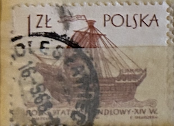
| SOURCE | TITLE| IMAGE MATCH | click to source page |
| HipStamp | Poland 1305: 1z 14th Century "Holk", used, F-VF | Europe - Poland, General Issue Stamp / HipStamp | 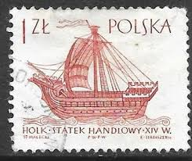 |
| eBay UK | POLAND 1965 - SAILING SHIPS - 14th CENTURY SHIP 'HOLK' | eBay UK | 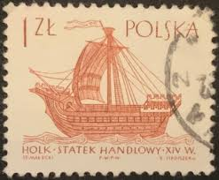 |
| Past Cart | polska stamp 1ZL – Past Cart |  |
| Old-Stamps.com | Holk - Statek Handlowy XIV W. / Polska 1963 | 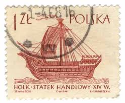 |
| eBay | POLAND USED SHIP POSTAGE STAMP | eBay | 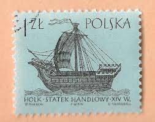 |
| Find Your Stamps Value | Ancient Ships: 14th century “Holk” 1z Black, Blue stamp price, value | 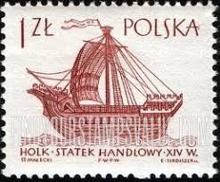 |
| Ships on Stamps Unit | Seemotive, Hanse Cog | 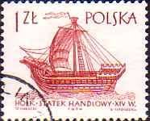 |
| Alamy | January 7 1963 hi-res stock photography and images - Alamy | 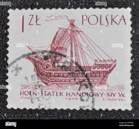 |
| Alamy | Postage stamps from the Poland in the Sailing Ships (1st series) issued in 1965 Stock Photo - Alamy | 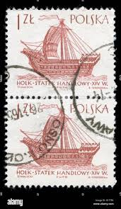 |
| Find Your Stamps Value | Ship Type of 1963: 15th century “Caraca” 1.15z Dark red brown Briefmarkenpreis | 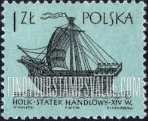 |
| Bob Shop | Poland - POLAND 1965 Sailboats ULH CV R4.40 SG 1457 was listed for 0.00 on 29 Sep at 07:16 by trevorfrsr in Durban (ID:624985521) | 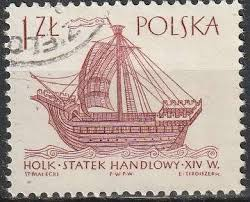 |
| Hakan Yavuz (hakanyavuz9026) – Profile | Pinterest |  | |
| iStock | Old Sailing Ship On A Polish Postage Stamp Stock Photo - Download Image Now - Mast - Sailing, Nautical Vessel, No People - iStock | 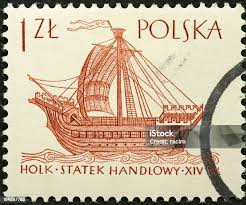 |
| Dreamstime.com | Handlowy Stock Photos - Free & Royalty-Free Stock Photos from Dreamstime | 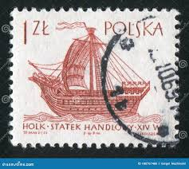 |
| Shutterstock | 30 Holk Royalty-Free Images, Stock Photos & Pictures | Shutterstock | 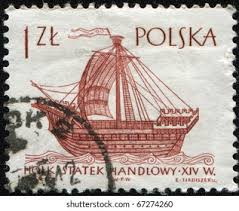 |
| DBA.dk | Polen, stemplet, Særfrimærke | DBA |  |
| Dreamstime.com | POLAND - CIRCA 1947: a Stamp Printed in Poland from the `Polish Culture` Issue Shows Frederic Chopin, Circa 1947. Editorial Photo - Image of pianist, piano: 197647941 | 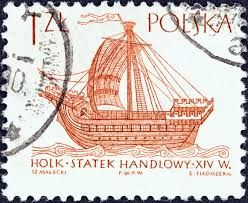 |
| buyhungarianstamps.com | 1299-1306 Poland - Ships (MNH) – Eastern Europe Postage Stamps | Hungaria Stamp Exchange | |
| Dreamstime.com | Postage Stamp Poland, 1963. 16th Century Holk Ancient Sailing Ship Editorial Photo - Image of label, history: 225095386 | 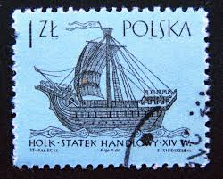 |
| HipStamp | Poland; 1964: Sc. # 1207 Used CTO Single Stamp | Europe - Poland, General Issue Stamp / HipStamp | 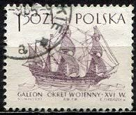 |
| buyhungarianstamps.com | Poland – Eastern Europe Postage Stamps | Hungaria Stamp Exchange | 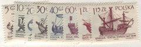 |
| Alamy | Postage stamps from the Poland in the Sailing Ships (1st series) issued in 1965 Stock Photo - Alamy | 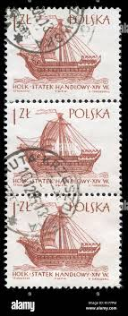 |
| eBay | Ships, Boats Polish Stamps for sale | eBay | 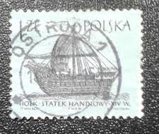 |
| Find Your Stamps Value | Value of polska koga statek 60 gr stamps | 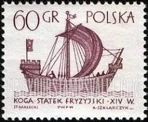 |
| Shutterstock | Poland Circa 1963 Post Stamp Printed Stock Photo 1356062072 | Shutterstock | 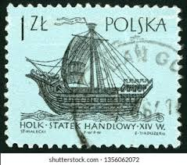 |
| Shutterstock | 19 A398 Royalty-Free Images, Stock Photos & Pictures | Shutterstock | 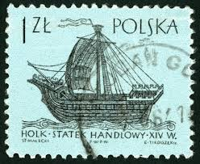 |
| Todocolección | s-03667- polonia. polska. - Buy Antique stamps of Poland on todocoleccion | 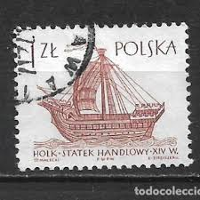 |
| eBay | Ships, Boats Postage Polish Stamps for sale | eBay | 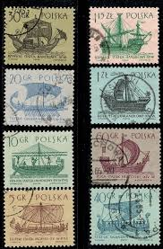 |
| Dreamstime.com | 394 Circa 1950s Stock Photos - Free & Royalty-Free Stock Photos from Dreamstime |  |
| Find Your Stamps Value | Wert von polska 1.15 zl Briefmarken | 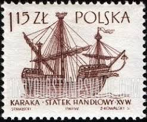 |
| Dreamstime.com | Kogge Stock Photos - Free & Royalty-Free Stock Photos from Dreamstime |  |
| Shutterstock | Poland Circa 1965 Postage Stamp Printed Stock Photo 125212613 | Shutterstock | 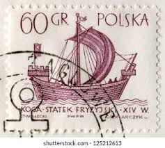 |
| Shutterstock | Holk : résultats (30) d'images libres de droits, de photos de stock et d'illustrations | Shutterstock | 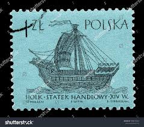 |
| Dreamstime.com | Medieval Ship Stamp Stock Photos - Free & Royalty-Free Stock Photos from Dreamstime | 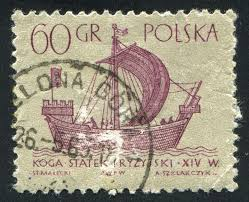 |
| Find Your Stamps Value | Value of Czechoslavakia dove 15 postaceskoslovenska jar benda stamps | 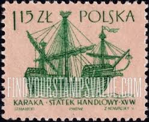 |
| Znaczki-pl.com | Znaczki | 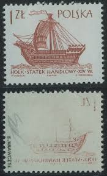 |
| Todocolección | 1974. polonia. 2157. barco insignia de polonia - Compra venta en todocoleccion | 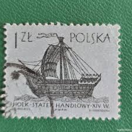 |
| Stamp Collecting Blog | Common but generally unrecognized varieties on Polish definitive stamps | 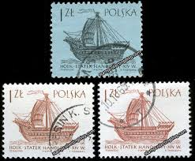 |
| Dreamstime.com | Postage stamp editorial image. Illustration of collection - 67585200 | 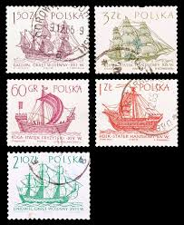 |
| HipStamp | Poland 1129 1963 Used | Europe - Poland, General Issue Stamp / HipStamp | 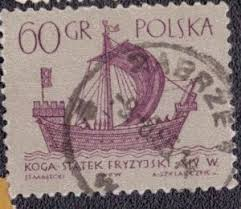 |
| Shutterstock | Cancel Boat: Over 4,239 Royalty-Free Licensable Stock Photos | Shutterstock | 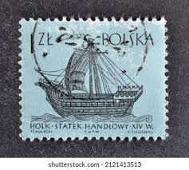 |
| Flickr | Poland 1963 60 Grosz (Scott PL1129 A398) | An image portrayi… | Flickr | 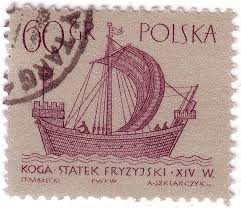 |
| stampsandstuff.net | Stamps from Poland 1960-1969 |  |
| Shutterstock | 5+ Hundred 15th Century Ship Royalty-Free Images, Stock Photos & Pictures | Shutterstock | 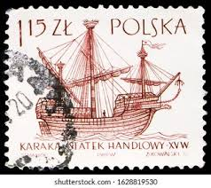 |
| Shutterstock | Poland Circa 1963 Set Postage Stamps Stock Photo 128998619 | Shutterstock | 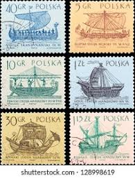 |
| arborrangers.com | House Rubber Stamps Sailing Background Clear Stamps For Card Making, 2 Boats Carrack Clear Stamps Sailing Ship Galeon Background Transparent Rubber Seal Stamps For DIY... Clearance Mountain House | 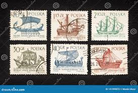 |
| Pixers | Canvas Print Dutch flute, 17th century (Poland 1964) - PIXERS.US | 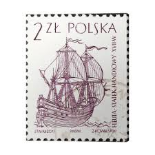 |
| Blogger.com | Violet Sky: ancient ships | 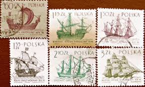 |
| Shutterstock | Poland Circa 1965 Post Stamp Printed Stock Photo 212641444 | Shutterstock | 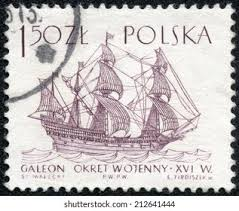 |
| Osta.ee | Poola " LAEVAD " 1963 (247989042) - Osta.ee | 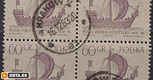 |
| Todocolección | polonia ivert nº 1247, holk, barco del siglo xv - Compra venta en todocoleccion | 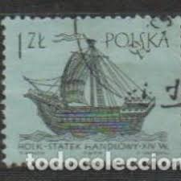 |
| Dreamstime.com | A Vintage Postage Stamp from Poland. Editorial Stock Photo - Image of europe, philatelic: 396188948 |  |
| iStock | Old Polish Sailing Ship On A Postage Stamp Stock Photo - Download Image Now - Horizontal, Nautical Vessel, No People - iStock | 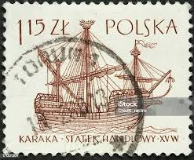 |
| eBay | Foreign Stamp Used - # 5401 | eBay | 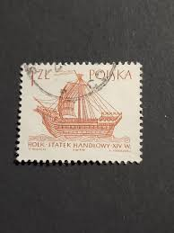 |
| Alamy | Vessel stamp hi-res stock photography and images - Alamy | 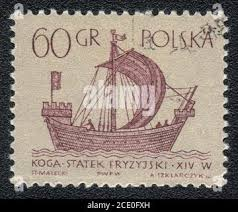 |
| Dreamstime.com | Postage Stamp Poland, 1963. 3rd Century Roman Merchantman Ancient Sailing Ship Editorial Stock Image - Image of object, mail: 225095444 | 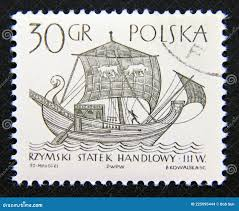 |
| Shutterstock | 7+ Thousand 1966 Print Royalty-Free Images, Stock Photos & Pictures | Shutterstock |  |
| PicClick | Poland, Europe, Stamps - PicClick | 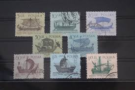 |
| eBay UK | Poland 1964 Sailing Ship 8 Value Used VE503 | eBay UK | |
| Find Your Stamps Value | Value of polska 1.35Zl staten stamps |